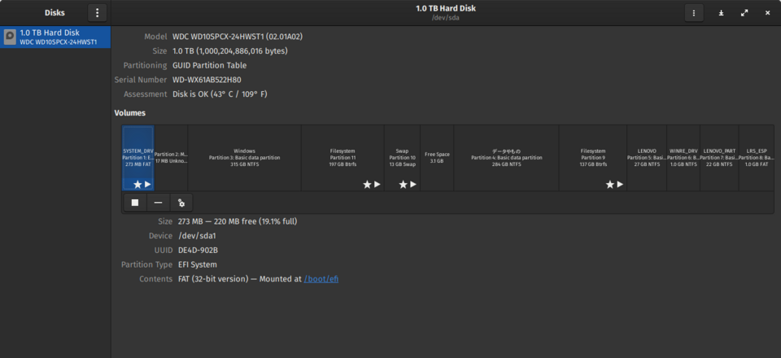

Como apagar o boot do pendrive e voltar ao normal
O problema
Depois de usar um pendrive de boot, ele muitas vezes não volta a funcionar como antes: aparece com um tamanho bem menor do que o real, fica dividido em mais de uma partição (divisão lógica do armazenamento) ou o Windows não consegue formatá-lo pelo jeito normal.
Possíveis causas
O Ventoy, o Rufus e o comando dd criam partições especiais e uma tabela de partições própria
no pendrive. Para deixá-lo como novo, é preciso apagar todas as partições e criar uma nova, o que também
apaga todos os arquivos dele.

Solução no Windows, pelo DiskPart
O DiskPart é uma ferramenta de linha de comando do Windows para gerenciar discos. Abra o Prompt de Comando
como administrador e digite diskpart. O comando list disk mostra todos os discos;
identifique o pendrive pelo tamanho. Atenção: escolher o disco errado apaga o HD do computador.
Digite select disk N (trocando N pelo número do pendrive) e clean, que apaga
todas as partições. Depois, create partition primary, format fs=exfat quick e
assign criam, formatam e dão uma letra à nova partição. Digite exit para sair.
Sem comandos, abra o Gerenciamento de Disco (botão direito no menu Iniciar), exclua cada volume do pendrive e, no espaço "Não alocado", crie um Novo volume simples. Outra opção é o Rufus, escolhendo "Não inicializável" em Seleção de boot.
Solução no Linux
No Ubuntu, abra o programa Discos, selecione o pendrive, clique no menu de três pontos > Formatar disco e depois no botão + para criar uma partição ocupando todo o espaço.
Pelo terminal, identifique o pendrive com lsblk e execute, trocando sdX pelo nome dele:
sudo wipefs -a /dev/sdX (apaga as assinaturas de partição),
sudo parted /dev/sdX mklabel msdos (cria uma tabela de partições MBR),
sudo parted /dev/sdX mkpart primary fat32 0% 100% (cria a partição) e
sudo mkfs.vfat -F 32 /dev/sdX1 (formata em FAT32).